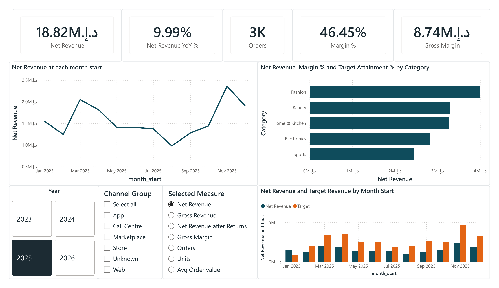
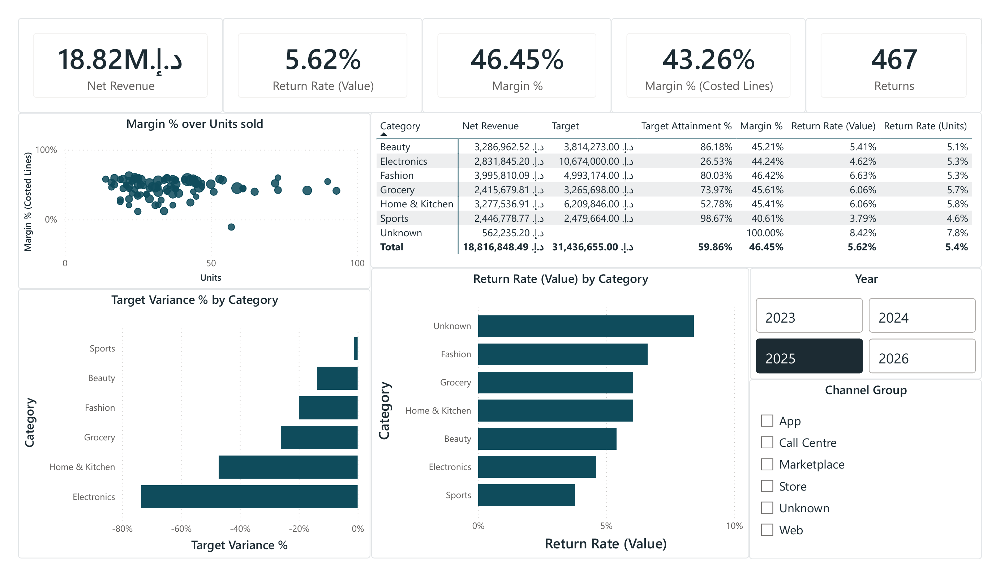
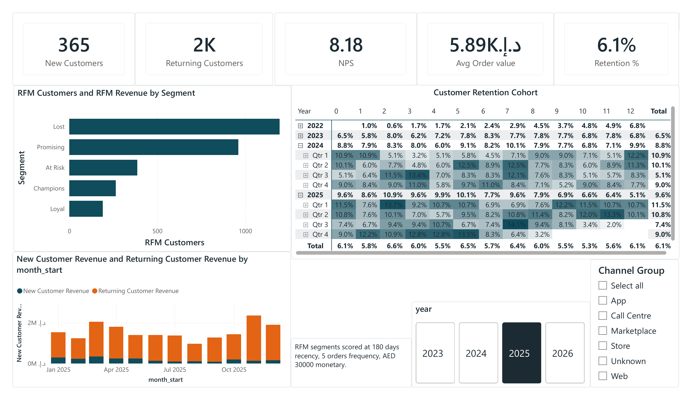
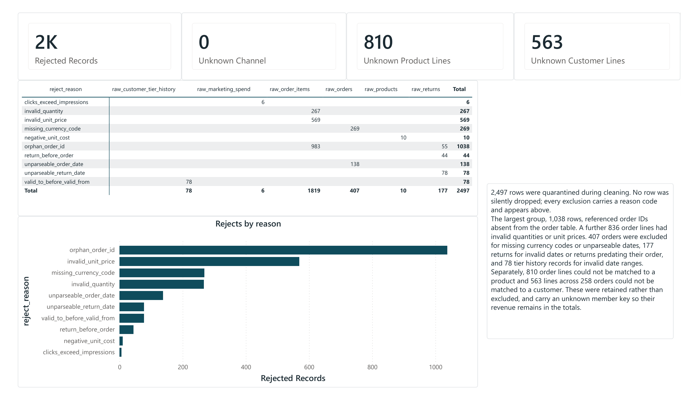

GulfCart Analysis
A four-page Power BI report for a synthetic GCC e-commerce business, covering revenue and margin, category performance, customer retention, and data quality.
About the project
The dataset was seeded with common retail data problems: orphaned foreign keys, invalid prices, and missing currency codes. Rather than filtering those out quietly, I built a separate Data Quality page so anyone reading the report can see what was excluded and why.
Executive Summary
The landing page covers revenue, margin, and how both break down by channel and category. A metric selector lets the same visuals switch between Net Revenue, Gross Revenue, Net Revenue after Returns, Gross Margin, Orders, Units, and Average Order Value.

What's modelled here
- Net Revenue, Gross Margin, Margin %, Return Rate (Value) as core measures, all filterable by channel and year
- A disconnected measure-selector table driving the KPI card and trend chart, so one visual covers several metrics
- A category table combining Net Revenue, Target, Attainment %, Margin %, and Return Rate for quick scanning
Why it's built this way
The metric selector binds a slicer to a disconnected table, then uses SWITCH on the selected value inside a single measure. This avoids building a separate chart for every metric. I used the same approach in the Financial Overview project.
Category & Product
Breaks margin down by category and by return behaviour, which affects margin in ways the top-line revenue number does not show.

Electronics and Fashion have the largest revenue share, while Sports shows the widest negative target variance and the highest return rate. A single blended margin number would not show that difference. Order lines that could not be matched to a product are grouped under an Unknown category with their revenue kept in the totals, using the Kimball unknown member pattern rather than excluding them.
Customer
RFM segmentation and a month-by-month cohort retention matrix. New versus returning revenue alone does not show whether the business is retaining customers over time.

The RFM scoring thresholds are written directly on the page rather than left inside a measure, so anyone reading the report can see how segments were defined. The cohort table tracks retention for each acquisition year and quarter against the months that follow, which shows whether retention is improving across cohorts.
Data Quality
Rows excluded during cleaning are recorded with a reason code rather than dropped silently, so the exclusions are visible in the report itself.

Types of rejection tracked
- Orphaned order IDs referencing an order not present in the orders table
- Invalid quantities or unit prices
- Missing currency codes, or dates that could not be parsed
- Invalid return dates, or returns dated before their order
- Tier history records with invalid validity date ranges
Order lines that could not be matched to a product or customer are handled differently. Rather than excluding them, they are kept under an unknown member key so their revenue stays in the totals, since dropping them would understate revenue for a reason unrelated to the business.
Power Query approach
Each source table is validated on ingest, and failing rows are routed to a rejects table with a reason code rather than filtered out. That reason code drives the chart on this page, so the report reflects what the transformation step actually did.
What I'd extend next
- Add a reconciliation measure comparing rejected value against total order value, linking the Data Quality page back to the Executive Summary
- Move the RFM scoring thresholds into parameters so they can be changed without editing DAX
- Add a returns-reason breakdown alongside the existing return-rate visuals